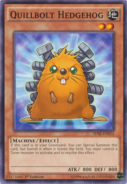
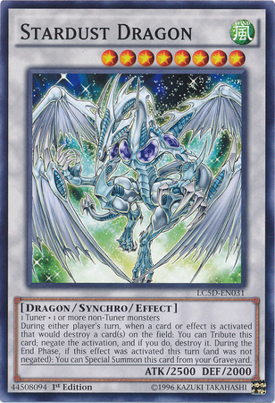

Synchro Summon
A Synchro Summon (シンクロ召しょう喚かん Shinkuro Shōkan; usually abbreviated Ｓシンクロ召しょう喚かん since Duelist Alliance) is the act of Special Summoning a Synchro Monster from the Extra Deck using a Tuner monster with additional non-Tuner monsters.
How to Synchro Summon

During their Main Phase, the turn player can Synchro Summon a Synchro Monster from face-down in their Extra Deck by sending two or more face-up monsters listed on the Synchro Monster Card, including exactly 1 Tuner (unless stated otherwise) from their field to the Graveyard as Synchro Materials, whose combined Levels exactly equal the Synchro Monster's Level. After that, the player Summons the Synchro Monster from the Extra Deck in an unoccupied Main Monster Zone that a Link Monster points to or an Extra Monster Zone in face-up Attack or Defense Position.

A player can perform any number of Synchro Summons per turn.
Prior to the introduction of the Extra Monster Zones, a monster could be Synchro Summoned to any Monster Zone.
Mechanics
Monsters that do not have Levels, such as Xyz Monsters and Link Monsters, cannot be used as Synchro Materials. Token Monsters and Trap Monsters can be used as Synchro Materials.
Synchro Materials are sent to the Graveyard by default, but the Synchro Summon is still successful even if the materials are moved to some other location instead. For example, it is still possible to perform a Synchro Summon while "Macro Cosmos" is active or using Pendulum Monsters as materials, in which case the materials will be banished or placed face-up in the Extra Deck, respectively.
Even if all appropriate Monster Zones are occupied, a Synchro Monster can still be Synchro Summoned as long as at least one of the Synchro Materials used is in one of these zones, so that there is an available zone when the Synchro Monster is Summoned.
A Synchro Summon is a type of built-in Special Summon, so it can be negated by cards like "Solemn Warning" and "Thunder King Rai-Oh". Even if a Synchro Summon is negated, the Synchro Materials do not return to the field.
Even if a monster lists a specific monster as materials, such as "Majestic Star Dragon", the Summon must use exactly 1 Tuner (unless otherwise specified). For example, if you have 2 "Phantom of Chaos", 1 being treated as "Majestic Dragon", and the other equipped with "Synchro Boost" and "Torque Tune Gear" and being treated as "Stardust Dragon", and a Level 1 non-Tuner monster, you can still Synchro Summon. However, if neither "Phantom" is a Tuner, or if both are, the Summon cannot be performed.
Effects
Like other Extra Deck monsters, if a Synchro Monster is not Synchro Summoned first, it cannot be Special Summoned from the Graveyard or while banished (unless it specifies another way to properly Special Summon it, in which case it must first be Summoned that way).
For example, if a Synchro Monster is Special Summoned from the Extra Deck by the effect of "Shadow Impulse" and sent to the Graveyard, or was sent from face-down in the Extra Deck to the Graveyard by "Gale Dogra", it cannot be Special Summoned from the Graveyard by "Premature Burial"; however, if it was originally Synchro Summoned, it can be Special Summoned from the Graveyard by "Premature Burial".
Yu-Gi-Oh! 5D's
Yu-Gi-Oh! 5D's is set in New Domino City some time after the events concerning Yugi Muto and Jaden Yuki. A new form of dueling, "Turbo Duels", now take place on motorcycles called "Duel Runners". While regular dueling still exists, Turbo Duels have become a popular form of entertainment for spectators, who watch them in specially-designed stadiums. This series also takes place in an altered time-line (due to Iliaster intervening with the past).

The story begins with the main antagonist, Jack Atlas, stealing the "Stardust Dragon" card from Yusei Fudo, the main protagonist, along with the first Duel Runner that Yusei ever built. He then leaves the "Satellite", an isolate ghetto of Domino City, and becomes the "Master of Faster" (AKA the reigning Turbo Duel Champion) in "New Domino City", a more fortunate and prosperous area of Domino City that upholds the Satellite's current isolation. Upset with Jack's betrayal and the current status quo, Yusei attempts to also leave the Satellite in order to find Jack and get his stolen Stardust Dragon card back. Along the way, Yusei runs into "Sector Security", a ruthless and biased police force who try to keep Satellite residents from entering New Domino City through any means necessary. However, despite Sector Security playing dirty, Yusei manages to make it to New Domino City and challenges Jack to a Turbo Duel. Cocky that he'll win, Jack accepts Yusei's offer and sneaks him into the Kabia Dome for their Duel. However, in the middle of their duel, a strange and powerful red dragon appears in the middle of the stadium after the clash between Stardust Dragon and Red Dragon Archfiend. The mysterious dragon then knocks Yusei and Jack off their Runners, and causes a city-wide blackout, ending the duel in a draw. Not understanding what's going on, Yusei and Jack take off their driving gloves to reveal a painful, glowing red mark on their forearms. However, before Yusei and Jack can get any answers, Rex Goodwin, Jack's manager and the Head of Sector Security, arrives with Sector Security guards who then arrests, tries and sentences Yusei to be "rehabilitated" in The Facility. Upset with Goodwin's interference, Jack demands to know how and why Goodwin is here. Goodwin tries to tell Jack not to worry, and that all will soon be revealed to him.